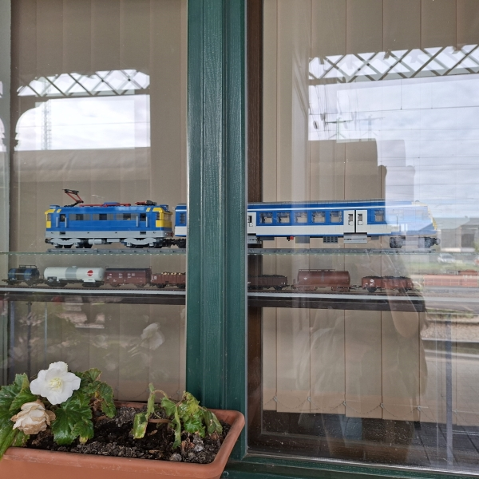
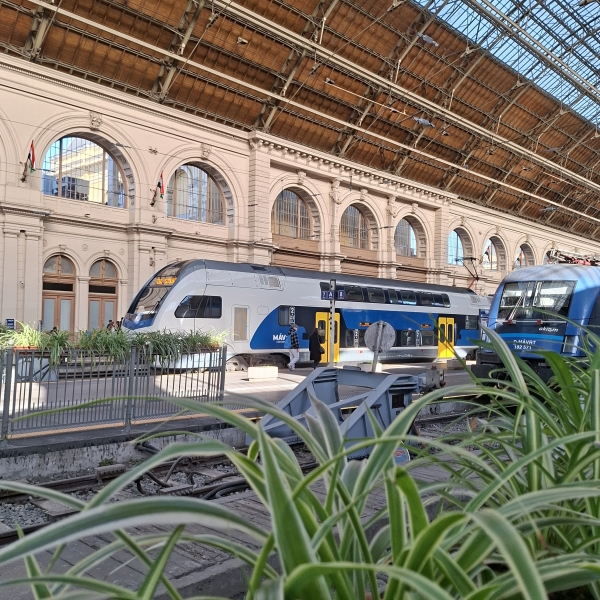
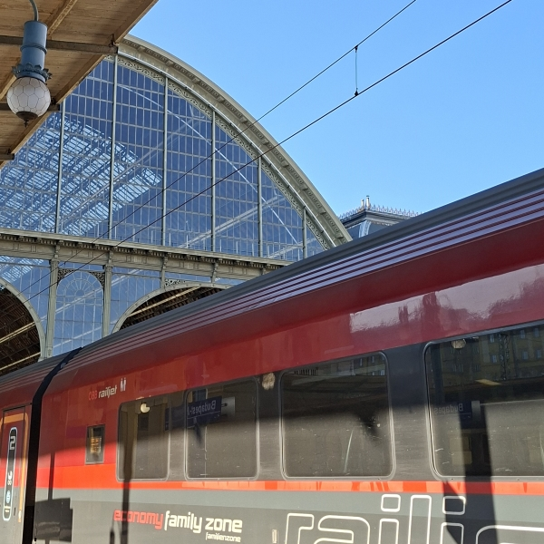
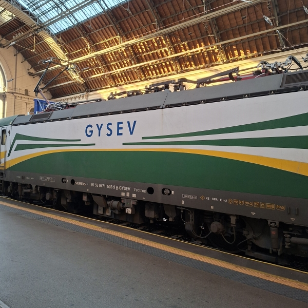
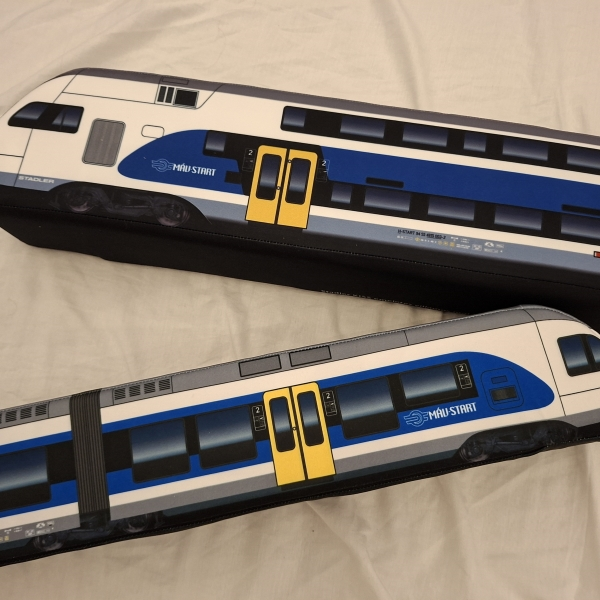
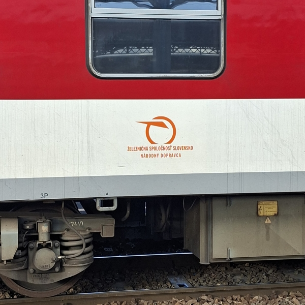
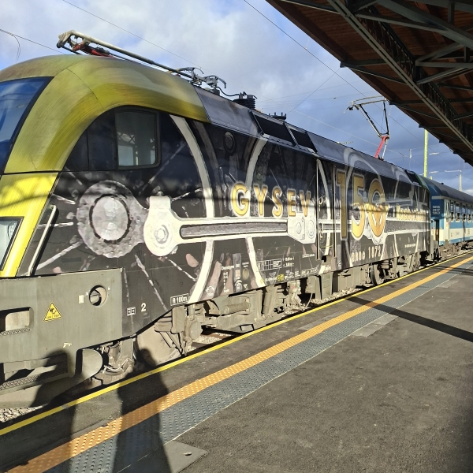
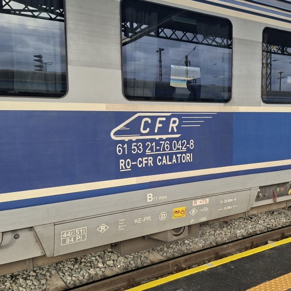

Budapest - October 2025
My most recent train trip was to Budapest in late October / early November.
Travel path
- Early morning departure from Slavonia toward Pécs, Baranya county, Hungary
- Pécs to Budapest-Kelenföld (western train station of Budapest) InterCity train, arriving at 9:46
Return:
- 11:51 departure from Budapest-Keleti (eastern train station of Budapest) by the same InterCity service to Pécs
- Pécs to Beli Manastir passenger train
What I did in Budapest
I spent 5 days in Budapest, so I've seen, done and eaten plenty! But since this is a website about trains, I'll stick to that. I visited Budapest-Keleti on two occasions specifically for train-watching and oh was it full of new things! I'll share photos below, but here's a summary:
- MÁV Stadler Kiss and Flirt. I loved these so much, I even got plushies of them! I took the Flirt on a small day-trip to Gödöllő - specifically the MÁTRA InterRegio service that continues toward Gyöngyös
- ÖBB-operated Railjet service from Budapest-Keleti to Wien Hbf, using the standard Siemens Viaggio Comfort carriages, hauled by a EuroSprinter
- A GYSEV engine that I was so excited to see (I'd only ever seen their multiple units before), that I don't even remember what it was hauling! The following day I was additionally lucky to see one in a special commemorative wrap celebrating 150 years of Raaberbahn
- A whole bunch of wagons belonging to Ukrzaliznytsia (Ukrainian Railways). I was sad to miss the outgoing train to Mukachevo, but seeing these stacked up aside while returning from Gödöllő sort of made up for it. Made me very happy, for sure!
- Drava InterCity headed west toward Ljubljana
- Wagons belonging to Železničná spoločnosť Slovensko (Railway Company Slovakia) set aside at Keleti
- Second-class CFR-branded wagons stopped at Keleti, on a trip from Wien Hbf to Baia Mare, as well as ones terminating at Keleti from Bucharest.
Photo gallery







